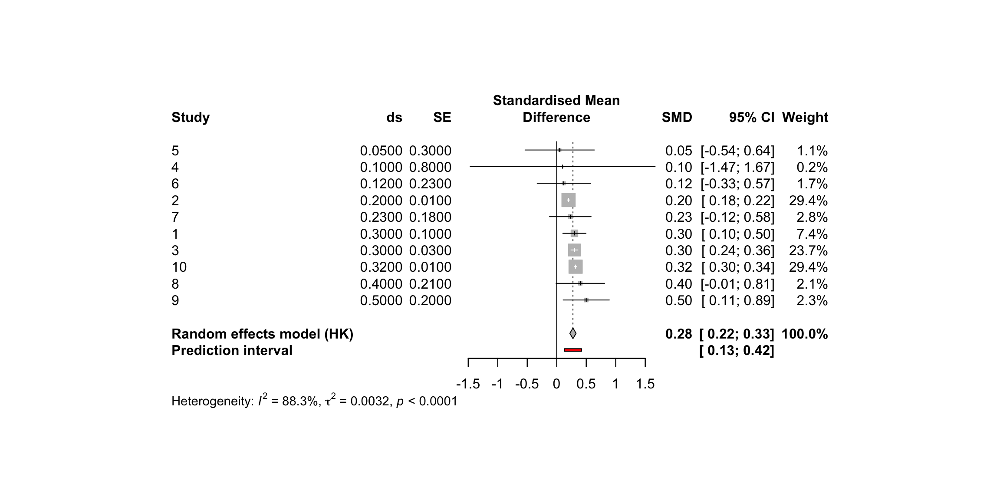
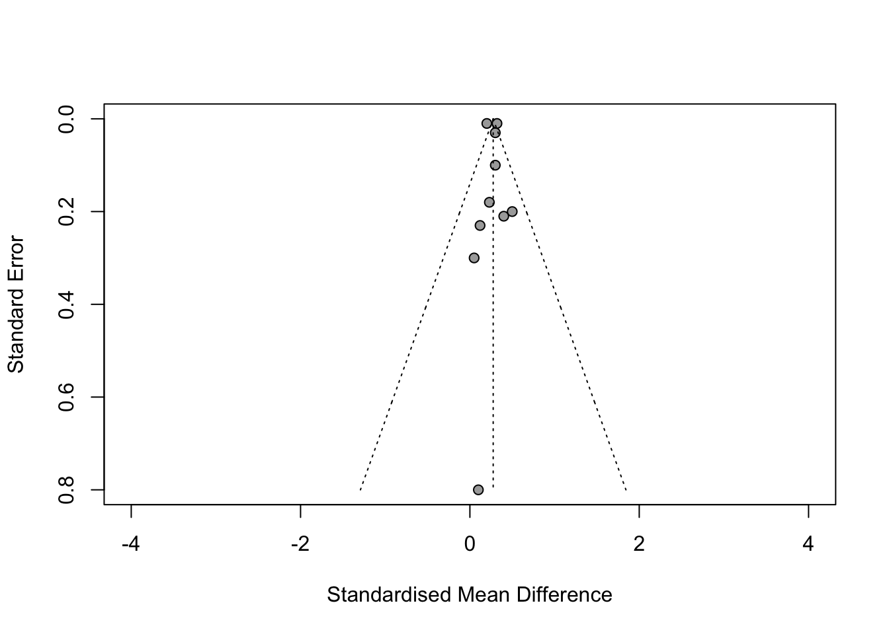
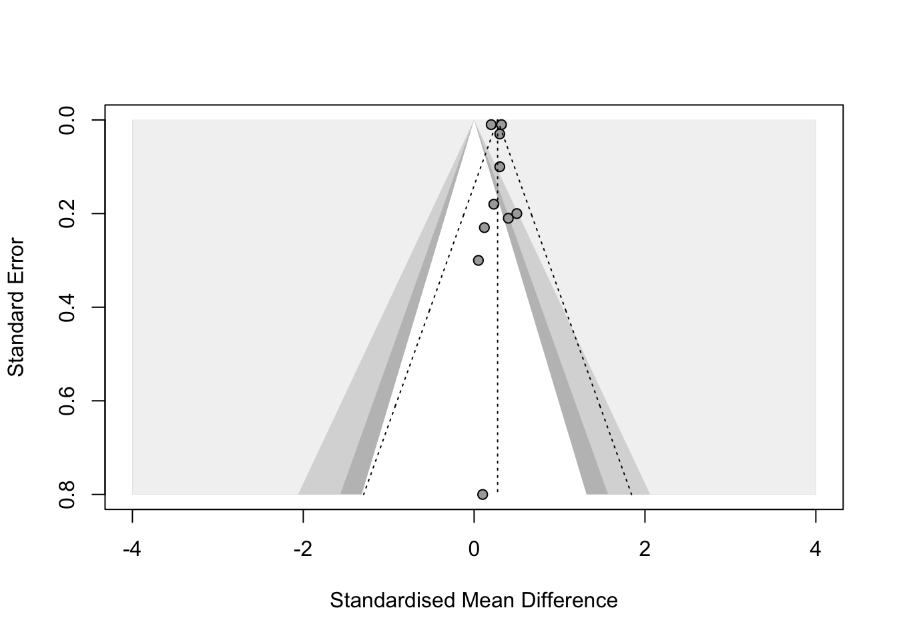
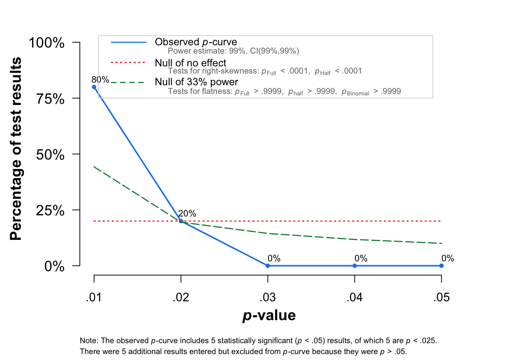

library(readxl)
library(meta)Evaluating Evidence Assignment IV: Reproducing the Meta-Analysis
The Effect of Caffeine Consumption on Reaction Time
Warning
Do not include your name as an author. Just like in science, manuscripts are reviewed anonymously to reduce the risk of bias and ensure that the work is evaluated based on its content and quality rather than on the identity of the authors.
Instructions
The goal of this assignment is to rerun the meta-analysis for your selected meta-analysis and create a fully reproducible report. As part of the assignment, you will rerun the meta-analysis, conduct bias-detection tests, and perform a subgroup analysis or meta-regression where appropriate. You will then interpret the results, including the pooled effect size, between-study heterogeneity, and results of the bias-detection tests.
To complete the assignment, use Chapters 4, 5, 7, 8 and 9 of Doing Meta-Analysis in R and Chapters 11 and 12 of Improving Your Statistical Inferences for guidance on pooling effect sizes, assessing heterogeneity, and conducting bias-detection tests.
In this document, we show how to perform a meta-analysis depending on the type of standardized effect size (Cohen’s \(d_s\), Cohen’s \(d_z\), or \(r\)) and on whether the primary effect sizes reported in the selected meta-analysis are already provided or need to be calculated. Each situation may require different packages or functions, as well as different types of raw data and spreadsheet organization. Below, we provide five examples covering different combinations of effect sizes and available information. You only need to use the example that matches your selected meta-analysis, but we recommend reading through all four examples.
This document also shows how to make your code fully reproducible using inline code. You should therefore use inline code when reporting the results of your analyses.
Steps to follow to complete the assignment
Determine what information the selected meta-analysis reports. Extract the relevant information from the meta-analysis and enter it into the provided spreadsheet.
Read the statistical methods section of the meta-analysis. This section may specify the type of effect size used in the primary studies and the bias-detection tests conducted. You can ignore differences in the methods used to estimate confidence intervals or between-study heterogeneity and instead use the settings provided in the examples in this document.
Conduct the meta-analysis.
Report the results of the meta-analysis, including the pooled effect size, between-study heterogeneity, and forest plot.
Conduct the bias-detection tests covered in the lecture, regardless of whether they were used in the selected meta-analysis.
Interpret the results, including the pooled effect size and the results of the bias-detection tests.
If possible, perform a moderator analysis. Perform a subgroup analysis if your moderator is categorical and a meta-regression if your moderator is numerical/continuous. Interpret how the moderator relates to the effect size and whether accounting for the moderator reduces between-study heterogeneity. If your selected meta-analysis did not include a moderator analysis, use the moderator you coded for Assignment III, where you were asked to code a common variable across the 10 studies that could serve as a moderator. In this case, explain why you would expect this variable to influence the pooled effect size.
Reflect on how data and code sharing facilitate the reproducibility of meta-analyses.
Important
We will cover the interpretation of the pooled effect, between-study heterogeneity and results of the bias-detection tests in both the lecture and workshop.
The structure of the .qmd should be as follows:
Load data
Load packages
Perform the meta-analysis
- Provide a brief description of the selected meta-analysis
- Provide the code to run the meta-analysis and the forest plot
- Report the results of the meta-analysis
Performing bias-detection tests
Provide the code to run bias-detection tests
Report the results of bias detection tests
Interpretation of results (i.e., is there evidence of bias, and has the pooled effect size been reduced?)
Performing subgroup analysis or meta-regression
Provide the code to rerun the subgroup analysis or meta-regression
Report the results, including the relevant effect estimates and statistical tests
Interpret the results (i.e., Whether the moderator explains the differences in effect sizes)
Reflection
- How do data and code sharing facilitate the reproducibility of meta-analyses?
Important
For this assignment, make sure that:
- Add a brief description of the meta-analysis you are trying to reproduce, including the title and DOI of the meta-analysis, a brief description of the research question, number of studies included in the meta-analysis, the study design of the included studies (i.e., whether they used a within-subjects or between-subjects design) and the name and type of moderator used.
The
.qmdfile is fully reproducible.Include a forest plot.
Report the pooled effect size, its 95% CI and \(p\)-value.
Report the results of the Cochran’s \(Q\)-test and the heterogeneity estimate \(\tau^2\) (\(tau^2\)) and its 95% CI, as well as \(I^2\) and the prediction interval.
Report the results of the bias-detection tests.
Report the results of the subgroup analysis (Test for subgroup differences) or meta-regression (Test for Residual Heterogeneity, Test of Moderators, and model results).
Interpret the the results of the subgroup/meta-regression analysis and bias-detection tests.
Reflect on any difficulties you encountered when trying to reproduce the original meta-analysis, and discuss how data and code sharing facilitate the reproducibility of meta-analyses.
Interpreting Between-study heterogeneity and Moderator Analyses
Tip
Between-study heterogeneity: Interpret I² as the proportion of variability attributable to between-study heterogeneity. As rough guidelines, 25%, 50%, and 75% indicate low, moderate, and high heterogeneity, respectively. Also consider the prediction interval.
Subgroup analysis: Compare the pooled effect sizes and 95% CIs across subgroups and interpret the Test for subgroup differences.
Meta-regression: Interpret the Test for Residual Heterogeneity, Test of Moderators, and model results.
Examples
Example 1: Performing a meta-analysis with pre-calculated Cohen’s \(d_s\) effect sizes
In this example the meta-analysis reports only the primary effect sizes (Cohen’s \(d_s\)) and their corresponding standard errors.
Load packages
Load data
example1 <- read_xlsx("example1.xlsx")Perform the meta-analysis
The meta-analysis I am attempting to reproduce is titled “The Effect of Caffeine Consumption on Reaction Time” (DOI: https://...). The meta-analysis aimed to answer the question of whether caffeine consumption improves reaction time, as measured using an eye–hand task. The original meta-analysis included 10 primary studies, all of which used a between-subjects design, according to the authors’ description.
m.ex1 <- metagen(
TE = smd, # Standardized mean difference
seTE = se, # Standard error of the effect size
data = example1,
sm = "SMD", # standardized mean difference (Cohen's d)
common = FALSE, # Set to TRUE for a fixed-effect (FE) meta-analysis
random = TRUE, # Perform a random-effect (RE) meta-analysis
method.tau = "REML", # Estimate tau² using restricted maximum likelihood
prediction = TRUE, # Estimate prediction interval (PI)
method.random.ci = "HK" # Use Hartung-Knapp adjustment for the random-effects CI
)
# Pooled effect size
# m.ex1$TE.random
# Cochran's Q-test p-value
# m.ex1$pval.Q
# Heterogeneity estimate (tau)
# m.ex1$tau
# Summary of the model. The statistics above can also be obtained using summary()
# summary(m.ex1) Best practice when reporting a meta-analysis is to include a forest plot which provides visual information about the distribution of the effect sizes as well as statistical information.
The resulting forest plot is shown in Figure 1.
forest(
m.ex1,
sortvar = TE,
prediction = TRUE, # Print prediction interval
print.tau2 = TRUE, # Print tau2
leftlabs = c("Study", "ds", "SE") # Adapt to the information reported in your meta-analysis
)
To report the results of the meta-analysis, you can use the forest plot, which includes most of the information of interest, as well as summary() and manually report the results. However, to make a manuscript easily reproducible, it is best to generate the reported statistics directly from the analysis code using inline R code. For example:
The meta-analysis returned a pooled effect size of d = 0.28, 95% CI (0.22, 0.33. The pooled effect size was significantly different from zero as indicated by the \(Z\)-test, p = 0.
The between-study heterogeneity variance was estimated at \(\tau^2\) = 0.0032342 (95%CI: 0; 0.01). The results of Cochran’s \(Q\)-test indicated that the amount of heterogeneity was not significantly different from 0, p-value = 0. The proportion of variability in the observed effect sizes attributable to between-study heterogeneity was \(I^2\) = 0.88%. The 95% prediction interval ranged from Cohen’s \(d_s\) = 0.13 to 0.42.
Example 2: Performing a meta-analysis with pre-calculated Pearson’s correlations (\(r\))
Correlations should be Fisher’s z-transformed before pooling. By default, metacor() does this transformation automatically for us. It is therefore sufficient to provide the function with the original, untransformed correlations reported in the studies.
Load packages
library(readxl)
library(meta)Load data
example2 <- read_xlsx("example2.xlsx")Perform the meta-analysis
m.ex2 <- metacor(
cor = cor,
n = n,
data = example2,
fixed = FALSE,
random = TRUE,
method.tau = "REML",
method.random.ci = "HK"
)
# Summary of the model
# summary(m.ex2)
# Pooled effect size
# m.ex2$TE.randomExample 3: Performing a meta-analysis with uncalculated Cohen’s \(d_s\)
Load packages
library(readxl)
library(meta)Load data
example3 <- read_xlsx("example3.xlsx")Perform the meta-analysis
# Use metcont to pool results.
m.ex3 <- metacont(
n.e = exp_n, # Sample size of the experimental group
mean.e = exp_mean, # Mean of the experimental group
sd.e = exp_sd, # Standard deviation of the experimental group
n.c = con_n, # Sample size of the control group
mean.c = con_mean, # Mean of the control group
sd.c = con_sd, # Standard deviation of the control group
data = example3,
sm = "SMD",
method.smd = "Cohen",
common = FALSE,
random = TRUE,
method.tau = "REML",
method.random.ci = "HK"
)
# Summary of the model
# summary(m.ex3)
# Pooled effect size
# m.ex3$TE.randomExample 4: Performing a meta-analysis with uncalculated Cohen’s \(d_z\)
Load packages
library(readxl)
library(metafor)Load data
example4 <- read_xlsx("example4.xlsx")Calculate Cohen’s \(d_z\)
In R, we can use the escalc() function from the metafor package to calculate \(d_z\) (using the measure = "SMCC" argument). There are two way to calculate Cohen’s d \(d_z\).
Using difference score means and SDs
data <- escalc(
measure = "SMCC",
m1i = post_mean,
m2i = pre_mean,
sd1i = post_sd,
sd2i = pre_sd,
ri = 0.5, # assuming an overall correlation of 0.5
ni = n,
data = example4
)Using paired t-test statistics
For this example, no spreadsheet is provided. You only need two columns: one containing the paired t-test statistic and another containing the sample size.
data <- escalc(
measure = "SMCC",
ti = t_stat,
ni = n,
data = example5
)Perform the meta-analysis
m.ex4 <- rma(data$yi, data$vi, data)
# Summary
# summary(m.ex4)
# Pooled effect size
# m.ex4$betaPerforming bias-detection tests
Funnel plot
meta::funnel(
m.ex1,
xlim = c(-4, 4) # Adjust X-axis if necessary
)
Contour-enhanced Funnel plot
meta::funnel(
m.ex1,
xlim = c(-4, 4), # Set the x-axis limits
contour = c(0.9, 0.95, 0.99), # Add 90%, 95%, and 99% significance contours
col.contour = c("gray75", "gray85", "gray95") # Set contour colours
)
Trim and fill method
metafor::trimfill(m.ex1)Number of studies: k = 10 (with 0 added studies)
SMD 95% CI t p-value
Random effects model (HK) 0.2751 [0.2219; 0.3282] 11.70 < 0.0001
Prediction interval [0.1282; 0.4219]
Quantifying heterogeneity (with 95% CIs):
tau^2 = 0.0032 [0.0004; 0.0147]; tau = 0.0569 [0.0188; 0.1211]
I^2 = 88.3% [80.5%; 92.9%]; H = 2.92 [2.26; 3.76]
Test of heterogeneity:
Q d.f. p-value
76.63 9 < 0.0001
Details of meta-analysis methods:
- Inverse variance method
- Restricted maximum-likelihood estimator for tau^2
- Q-Profile method for confidence interval of tau^2 and tau
- Calculation of I^2 based on Q
- Hartung-Knapp adjustment for random effects model (df = 9)
- Prediction interval based on t-distribution (df = 9)
- Trim-and-fill method to adjust for funnel plot asymmetry (L-estimator)Egger’s regression test
The meta package does not have a function for this test, so implementing Egger’s regression test requires a bit of coding.
m.ex1$data |>
# Calculate the standard normal deviate (y) and study precision (x)
dplyr::mutate(
y = .TE/.seTE,
x = 1/.seTE
) |>
lm(y ~ x, data = _) |>
broom::tidy() # Convert regression results into a tidy data frame# A tibble: 2 × 5
term estimate std.error statistic p.value
<chr> <dbl> <dbl> <dbl> <dbl>
1 (Intercept) 0.193 1.20 0.161 0.876
2 x 0.260 0.0260 10.0 0.00000840The metafor package does have a function for this test:
metafor::regtest(
x = smd, # Standardized mean difference (Cohen's d)
# vi, # Variance; not needed when standard error is provided
sei = se, # Standard error
data = example1,
model= "lm", # Uses a linear regression model for the test
predictor= "sei" # Standard error as predictor
)
Regression Test for Funnel Plot Asymmetry
Model: weighted regression with multiplicative dispersion
Predictor: standard error
Test for Funnel Plot Asymmetry: t = 0.1606, df = 8, p = 0.8764
Limit Estimate (as sei -> 0): b = 0.2600 (CI: 0.2001, 0.3199)PEET-PEESE
# PET
metafor::rma(
yi = smd,
sei = se,
mods = ~se,
data = example1,
method = "FE"
) |>
broom::tidy()# A tibble: 2 × 6
term type estimate std.error statistic p.value
<chr> <chr> <dbl> <dbl> <dbl> <dbl>
1 intercept summary 0.260 0.00840 30.9 3.47e-210
2 se summary 0.193 0.388 0.496 6.20e- 1# PEESE
metafor::rma(
yi = smd,
sei = se,
mods = ~I(se^2),
data = example1,
method = "FE"
) |>
broom::tidy()# A tibble: 2 × 6
term type estimate std.error statistic p.value
<chr> <chr> <dbl> <dbl> <dbl> <dbl>
1 intercept summary 0.262 0.00687 38.2 1.04e-319
2 I(se^2) summary -0.115 1.05 -0.109 9.13e- 1P-curve
P-curve will return an error when there are two or fewer significant effect sizes in your dataset.
# Install package using remotes::install_github()
# remotes::install_github("MathiasHarrer/dmetar")
# Load package
library(dmetar)
# Conduct p-curve
pcurve(m.ex1)
P-curve analysis
-----------------------
- Total number of provided studies: k = 10
- Total number of p<0.05 studies included into the analysis: k = 5 (50%)
- Total number of studies with p<0.025: k = 5 (50%)
Results
-----------------------
pBinomial zFull pFull zHalf pHalf
Right-skewness test 0.031 -11.428 0 -10.843 0
Flatness test 1.000 11.263 1 11.806 1
Note: p-values of 0 or 1 correspond to p<0.001 and p>0.999, respectively.
Power Estimate: 99% (99%-99%)
Evidential value
-----------------------
- Evidential value present: yes
- Evidential value absent/inadequate: no Explaining heterogeneity
Subgroup analysis
subgroup <- update(
m.ex1,
subgroup = categorical_moderator,
tau.common = TRUE # Assumes the subgroups share a common tau^2
)
subgroupNumber of studies: k = 10
SMD 95% CI t p-value
Random effects model (HK) 0.2751 [0.2219; 0.3282] 11.70 < 0.0001
Prediction interval [0.1282; 0.4219]
Quantifying heterogeneity (with 95% CIs):
tau^2 = 0.0032 [0.0004; 0.0147]; tau = 0.0569 [0.0188; 0.1211]
I^2 = 88.3% [80.5%; 92.9%]; H = 2.92 [2.26; 3.76]
Quantifying residual heterogeneity (with 95% CIs):
tau^2 = 0.0025 [0.0000; 0.0173]; tau = 0.0504 [0.0000; 0.1316]
I^2 = 38.8% [0.0%; 83.9%]; H = 1.28 [1.00; 2.49]
Test of heterogeneity:
Q d.f. p-value
76.63 9 < 0.0001
Results for subgroups (random effects model (HK)):
k SMD 95% CI tau^2 tau
categorical_moderator = low-dose 5 0.2463 [0.1695; 0.3231] 0.0025 0.0504
categorical_moderator = medium-dose 5 0.3195 [0.2324; 0.4066] 0.0025 0.0504
Q I^2
categorical_moderator = low-dose 11.11 64.0%
categorical_moderator = medium-dose 1.96 0.0%
Test for subgroup differences (random effects model (HK)):
Q d.f. p-value
Between groups 3.07 1 0.0800
Within groups 13.07 8 0.1095
Details of meta-analysis methods:
- Inverse variance method
- Restricted maximum-likelihood estimator for tau^2
(assuming common tau^2 in subgroups)
- Q-Profile method for confidence interval of tau^2 and tau
- Calculation of I^2 based on Q
- Hartung-Knapp adjustment for random effects model (df = 9)
- Prediction interval based on t-distribution (df = 9)When performing a subgroup analysis, we are interested in comparing the effect sizes across the levels of the moderator. We can assess whether the effect sizes differ between subgroups by examining the Test for subgroup differences. Report the effect size and corresponding 95% CI for each subgroup, as well as the results of the Test for subgroup differences, including its p-value.
Meta-regression
m.reg <- metareg(m.ex1, ~categorical_moderator)
m.reg
Mixed-Effects Model (k = 10; tau^2 estimator: REML)
tau^2 (estimated amount of residual heterogeneity): 0.0025 (SE = 0.0039)
tau (square root of estimated tau^2 value): 0.0504
I^2 (residual heterogeneity / unaccounted variability): 43.18%
H^2 (unaccounted variability / sampling variability): 1.76
R^2 (amount of heterogeneity accounted for): 21.57%
Test for Residual Heterogeneity:
QE(df = 8) = 13.0702, p-val = 0.1095
Test of Moderators (coefficient 2):
F(df1 = 1, df2 = 8) = 2.9822, p-val = 0.1225
Model Results:
estimate se tval df pval ci.lb
intrcpt 0.2463 0.0262 9.4038 8 <.0001 0.1859
categorical_moderatormedium-dose 0.0732 0.0424 1.7269 8 0.1225 -0.0245
ci.ub
intrcpt 0.3067 ***
categorical_moderatormedium-dose 0.1709
---
Signif. codes: 0 '***' 0.001 '**' 0.01 '*' 0.05 '.' 0.1 ' ' 1When performing a meta-regression, we are interested in whether the amount of between-study heterogeneity remaining after accounting for the moderator is significant (Test for Residual Heterogeneity) and whether the moderator explains differences in effect sizes (Test of Moderators). Report the effect size and corresponding 95% CI for each level of the moderator, as well as the results of the Test of Moderators, including its p-value.
Also note that the last part of the output includes Model Results. This includes the intercept, which in our case represents the estimated average reaction time when the dose is zero, and the beta coefficient, which represents the change in average reaction time for a one-unit increase in dose. We would interpret this as:
The average reaction time at a dose of zero was 0.25 and the average reaction time increased by 0.07 for every one-unit increase in dose.